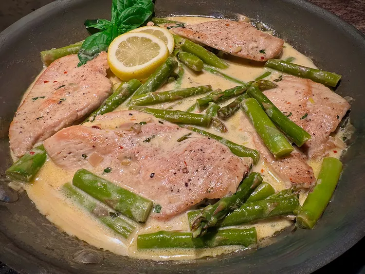

One Pan Chicken Breast and Asparagus in Lemon Cream Sauce

Description
This one pan chicken breast and asparagus in lemon cream sauce
is a tempting one-skillet main dish, and delicious with mashed
potatoes or mashed cauliflower. Red pepper flakes bring a tiny
bit of heat to the sauce, so use as much or as little as you
wish.
Ingredients
- 1 lemon, zested and juiced
- 3 cloves of garlic
- 1/2 cup chicken broth
- 1 pound asparagus, cut into 3-inch pieces
- 1 1/2 pounds skinless, boneless chicken breasts (about 2)
Steps
- Combine lemon zet and juice, garlic, and chicken broth in a small bowl and set aside.
- Slice each chicken breast to create 4 cutles.
- Heat olive oil in a large skillet over medium heat.
- To the same skillet, add shallots and cook until softened. Add chicken broth mixture and bring to boil.